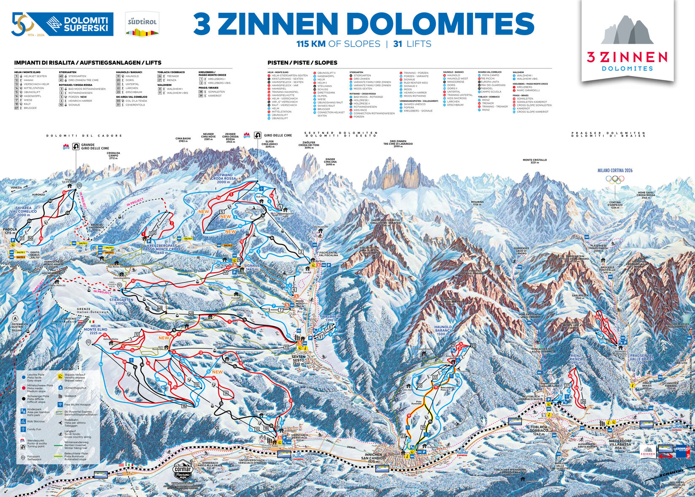

The 3 Zinnen Dolomites, also known as the Tre Cime di Lavaredo, offer one of the most breathtaking landscapes in Europe—a place where jagged limestone towers rise dramatically above untouched alpine meadows. Visiting this region feels like stepping into a world where nature reigns supreme, inviting you to slow down, breathe deeply, and reconnect with the outdoors. Located in the northern Italian Alps, the 3 Zinnen area is famous for its iconic three peaks, which stand like monumental guardians over the surrounding valleys. Their pale, sculpted faces change colour throughout the day, glowing soft pink at sunrise and turning fiery orange at sunset. It’s no surprise that hikers, photographers, and nature lovers from all over the world come here to witness this natural spectacle.
One of the best ways to experience the region is by hiking the Tre Cime Loop. This accessible trail winds around the peaks, offering awe-inspiring views at every turn. Along the way, you’ll pass charming rifugi—traditional alpine huts—where you can enjoy homemade Italian dishes while gazing out at panoramic mountain views. For those seeking something more adventurous, there are several climbing routes and challenging trails that reward you with even more dramatic perspectives. Beyond the mountains themselves, the 3 Zinnen area is rich in biodiversity. Marmots peek out from rocky burrows, eagles circle overhead, and wildflowers blanket the meadows in vibrant colours during the summer months. In winter, the region transforms into a peaceful snowy paradise, ideal for skiing, snowshoeing, and quiet walks through frosted forests.

What makes the 3 Zinnen Dolomites truly unforgettable is the sense of peace they offer. Whether you’re watching clouds drift around the summits or hearing the distant ringing of cowbells, the experience reminds you of the beauty and simplicity of the natural world. It’s a destination that reconnects you with yourself as much as with nature. For anyone seeking inspiration, adventure, or just a moment of stillness, the 3 Zinnen Dolomites are a place you’ll carry with you long after you leave.